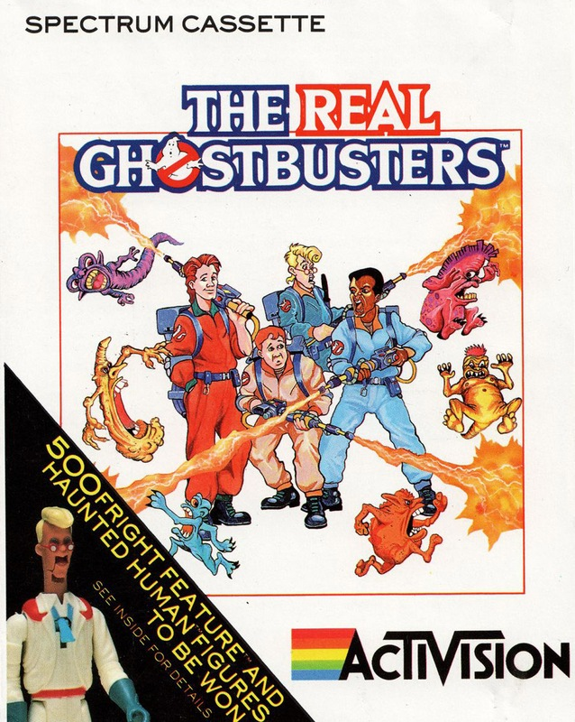
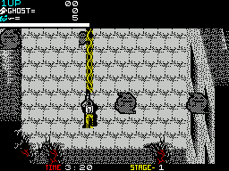

The Real Ghostbusters


{kind=link}

| Publisher: | Activision |
| Price: | £9.99 |
| Year: | 1989 |
| Source: | CRASH, Issue 64 |

Hi, we’re the Real Ghostbusters, stars of TV, video, bendy toys (if you make any remarks here, Phil, I will hit you) etc, and now the latest computer game from Activision. In this ten level, action-packed game you too can become a Ghostbuster, joining us as we shoulder our proton beams and guns and set about saving the day (again).
As with the original game collecting ghosts is the objective. Unlike the original most of the ghosts start off as big and very aggressive monsters. Shooting them with your gun reduces the creatures to harmless ghosts, which can be collected with your proton beam (hold down fire). While bullets are unlimited, proton energy isn’t and more can be collected via bonus items concealed in various obstructions — like oil drums and wheelbarrows (!?). Bonus items include shield, super bullets, increased beam energy and Slimer! Fans of the TV show will know Slimer’s the ghostbuster’s pet ghost with a ravenous appetite for ‘foody!’. In the game the cute, green ghost circles around your character, sticking out his tongue and killing anything that touches him.

you and stage three
At the end of each level lurks a super baddie who makes all of the horrible denizens so far encountered look like beauty queens. These loathsome rejects from the lowest pits of hell are very tough and take many shots to dispatch. But once they’re sent back to their master, a key appears which allows you on to the next multiloaded level.
Unlike the original game this is something of a masterpiece of programming. Graphics are extremely colourful, highly detailed and there’s hardly any colour clash at all. Scrolling is relatively smooth in all directions and sound is effective, with a good title tune. Each level has at least two routes to the end-of-level monster and finding the best one is all part of the game. Other tactics involve use of the proton beam which not only collects ghosts, but also quickly destroys monsters. Making good use of the proton beam, without running out of power, is critical. And collecting ghosts isn’t important only for points — some of them carry bonus items and if you collect 50 ghosts you get a life. This means when you’re playing the game you’re always torn between rushing to the end — to beat the timer — or staying around to collect more ghosts (which isn’t easy). Once good at the game you can follow one route to the end of level, destroy the super monster, then go down route two to get more ghosts.
The only real flaw in gameplay is the two-player option. With such relatively big characters there’s not far you can move without hitting the edge of the screen unless your fellow player keeps up, allowing the screen to scroll with you. Since there’s such a lot of monsters waiting to ambush you the two player game is, on the whole, more irritating than fun. In addition the control keys for the second Interface 2 joystick have been messed up so you can’t use two joysticks, and the key layout is poor as well. But still, if you really do want a two-player game, it is there — but all the marks are for the excellent one-player game.
In conclusion The Real Ghostbusters is an addictive and highly enjoyable trip into the cartoon world of everyone’s favourite paranormal investigators.
MARK — 90%
The good thing about having a game based on a cartoon series in the office is you have an excuse to watch the cartoons on children’s TV! But when the cartoons have finished you can carry on the story with this excellent conversion from Activision. Graphically the game couldn’t be better, ghosts, backgrounds, characters — they are all beautifully drawn and animated. Do you remember the way the colour was done in Karnov? Well The Real Ghostbusters has been coloured the same way and it works a treat! There is tons of colour on the screen and hardly any clash at all — fantastic. Since the levels are all quite different there’s a real incentive to see what the next one’s like. Of course, all those wonderful levels mean a lot of multiloads but the code for them is all on one side of the tape, so at least there’s no fiddling about trying to find level one when you die. You all must remember how well the first Ghostbusters sold and it wasn’t really that good, so watch this game go right to the top!
NICK — 90%
There’s this interesting tendency around the CRASH office for work to stop on a Monday afternoon, a tendency which owes more than a little to a certain cartoon TV programme! On a comparison with the original Ghostbusters game, this is absolutely brilliant. The graphics are very good, and sound is okay, but the reason I’d play Real Ghostbusters would undoubtedly be the playability; there’s loads and loads of it! This is a compulsory purchase for all fans of the series (like me) and recommended for anyone else who likes a spectacular blast as well.
MIKE — 89%
RATING
Ten big levels and spectacular graphics make for a brilliantly playable game
| Presentation: | 88% |
| Graphics: | 91% |
| Sound: | 84% |
| Playability: | 91% |
| Addictive qualities: | 90% |
| Overall: | 90% |